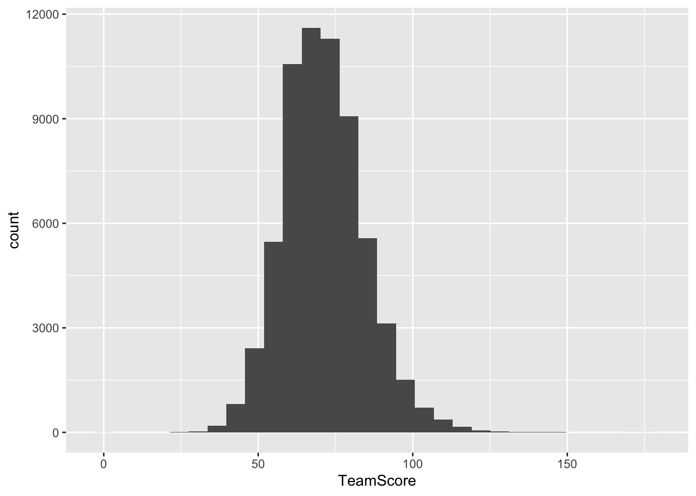
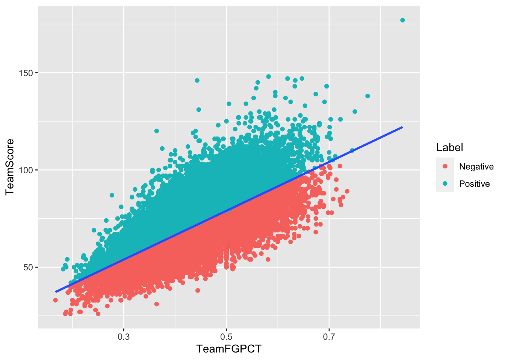
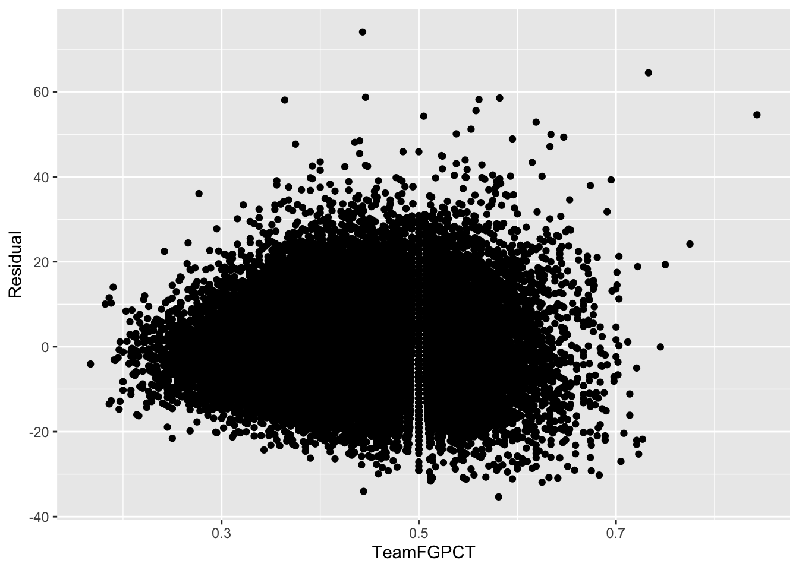

Chapter 2 The modeling process
The Nebraska men’s basketball team in 2019-2020 was … not good. The first season of Fred Hoiberg brought excitement and a lot of new faces to Lincoln, but the product on the floor didn’t go as hoped. The team finished 7-25.
In the off-season, The Mayor turned over the roster (again), bringing on players who couldn’t play the previous season because of transfer rules and some new transfers who could play.
As of this writing, the team has won 4 games and lost 7, and they’ve lost every Big Ten game they’ve played. But watch the team, and it’s obvious they are better. But – and this is a question we’ll explore over multiple chapters – how much better?
Let’s start by looking at predicting how many points the team should score given how well they are shooting. And we’ll use this as a chance to look at linear regression modeling.
If you don’t have them already installed, we’ll need the tidyverse and tidymodels for this book.
install.packages("tidyverse")
install.packages("tidymodels")After they’ve installed – and if you haven’t this will take a bit – load them.
library(tidyverse)
library(tidymodels)For this walkthrough, we’re going to use a dataset of college basketball games from the 14-15 season through the 20-21 season as of Jan. 8.
For this walkthrough:
Let’s load this data and take a look at it.
games <- read_csv("data/cbblogs1521.csv")Any time we’re building models, we need to explore the data a bit. We can learn about our data before we try anything, which helps us learn more. A common first step? Histograms of the columns you’re looking at. A histogram groups data into bins and counts up the number of rows in that fall in the bin. Let’s first look at the histogram of points a team has scored (TeamScore).
ggplot() + geom_histogram(data=games, aes(x=TeamScore))## `stat_bin()` using `bins = 30`. Pick better value with `binwidth`.
First, look at the highest bar. It’s in the upper 60s, with a line near the top around 70. So a lot of college basketball teams scored that area in a game.
We’re also looking at shooting perentage, so let’s make a histogram for that.
ggplot() + geom_histogram(data=games, aes(x=TeamFGPCT))## `stat_bin()` using `bins = 30`. Pick better value with `binwidth`.## Warning: Removed 2 rows containing non-finite values (stat_bin).
First, note that 2 rows were removed for containing “non-finite values.” What does that mean? Two games don’t have shooting percentages. They got a score, but the data is missing. It’s not going to matter for modeling, so we should drop those games so they don’t cause us problems later. Second, most teams are shooting in the mid-40s per game for all shots from the floor (that’s both two point and three point shots combined).
We can’t model nothing, so we need to drop the games with no stats. We can do that with a simple filter.
games <- games %>% filter(TeamFGPCT>0)Now we begin the process of creating a model. Modeling in data science has a ton of details, but the process for each model type is similar.
- Split your data into training and testing data sets. A common split is 80/20.
- Train the model on the training dataset.
- Evaluate the model on the training data.
- Apply the model to the testing data.
- Evaluate the model on the test data.
From there, it’s how you want to use the model. We’ll walk through a simple example here, using the simplest model – a linear model.
Linear models are something you’ve understood since you took middle school math and learned the equation of a line. Remember y = mx + b? It’s back. And, unlike what you complained bitterly in middle school, it’s very, very useful.
What a linear model says, in words is that we can predict y if we multiply a value – a coefficient – by our x value offset with b, which is really the y-intercept, but think of it like where the line starts. What we’re trying to do here is predict how many points a team should score given their shooting prowess as a team. Or, expressed as y = mx + b: points = TeamFGPCT * ? + some starting point. Think of some starting point as what the score should be if the TeamFGPCT is zero. Should be zero, right? Intuitively, yes, but it won’t always work out so easily.
2.1 Setting up the modeling process
With most modeling tasks we need to start with setting a random number seed to aid our random splitting of data into training and testing.
set.seed(1234)Random numbers play a large role in a lot of data science algorithms, so setting one helps our reproducibility.
After that, we split our data. There’s a number of ways to do this – R has a bunch and you’ll find all kinds of examples online – but Tidymodels has made this easy.
game_split <- initial_split(games, prop = .8)
game_split## <Analysis/Assess/Total>
## <48108/12026/60134>What does this mean? It says that initial_split divided the data into 48,108 games in analysis (or training), 12,026 into assess (or test), of the 60,134 total records in the dataset. But the split object isn’t useful to us. We need to assign them to dataframes. We do so like this:
game_train <- training(game_split)
game_test <- testing(game_split)Now we have two dataframes – game_train and game_test – that we can now use for modeling.
First step to making a model is to set what type of model this will be. We’re going to name our model object – lm_model works because this is a linear model. We’ll use the linear_reg function in parsnip (the modeling library in Tidymodels) and set the engine to “lm.”
lm_model <- linear_reg() %>%
set_engine("lm")We can get a peek at lm_model and make sure we did everything right by just typing it and executing.
lm_model## Linear Regression Model Specification (regression)
##
## Computational engine: lmNow, let’s fit a linear model to our data. We’ll name the fitted model fit_lm and we’ll take our model object that we just created and fit it using the fit function. What goes in the fit function can be read like this:
TeamScore is approximately modeled by TeamFGPCT
The only thing left is to specify the dataset.
fit_lm <- lm_model %>%
fit(TeamScore ~ TeamFGPCT, data = game_train)Let’s take a look at what the fitted model object tells us about our data.
tidy(fit_lm, conf.int = TRUE)## # A tibble: 2 x 7
## term estimate std.error statistic p.value conf.low conf.high
## <chr> <dbl> <dbl> <dbl> <dbl> <dbl> <dbl>
## 1 (Intercept) 16.0 0.254 63.0 0 15.5 16.5
## 2 TeamFGPCT 126. 0.570 221. 0 125. 127.The two most important things to see here are the terms and the estimates. Start with TeamFGPCT. What that says is for every 10 percentage points of shooting percentage, a team should score 12.6 points. HOWEVER, the intercept has something to say about this. What the intercept says is that a team with a big fat zero for shooting percentage is going to score just a hair short of 16 points.
Wait … how? Well, are field goals the only way to score in basketball? No. So there’s some of your non-zero intercept.
Think again about y = mx + b. We have our terms here: y is team score, m is 126.26, x is the team shooting percentage and b is 15.98997. Let’s pretend for a minute that you coached a team that shot 40 percent in college basketball. Our model predicts you would score about 66 points.
But look at the confidence intervals. So our model says you’d score 66, but we’re 95 percent sure the real number is going to be between 65 and 67.
2.2 Predicting based on the model
Now, we can take the model predictions and bind them to our dataset. This will be a common step throughout this book so we can see what the model predicted vs what the real world produced.
trainresults <- game_train %>%
bind_cols(predict(fit_lm, game_train))Walking through this, we’re creating a dataframe called trainresults, which is game_train with the results of the predict function bound to it. The predict function takes two arguments – the fitted model and the dataset it is being applied to, which in this case is the same dataset. What will result is our game_train dataset with a new column: .pred
Our first step in evaluating a linear model is to get the r-squared value. The yardstick library (part of Tidymodels) does this nicely. We tell it to produce metrics on a dataset, and we have to tell it what the real world result is (the truth column) and what the estimate column is (.pred).
metrics(trainresults, truth = TeamScore, estimate = .pred)## # A tibble: 3 x 3
## .metric .estimator .estimate
## <chr> <chr> <dbl>
## 1 rmse standard 9.33
## 2 rsq standard 0.505
## 3 mae standard 7.27We’ll get more into RMSE and MAE later. For now, focus on rsq or r-squared. What that says is that changes in shooting percentage account for 50.48 percent of the variation in team score. That’s pretty good. Not great, but for one stat, it’s not bad.
A way to look at this is with a scatterplot. The geom_smooth creates its own linear model and puts the line of best fit through our dots.
ggplot() +
geom_point(data=games, aes(x=TeamFGPCT, y=TeamScore)) +
geom_smooth(data=games, aes(x=TeamFGPCT, y=TeamScore), method="lm", se=FALSE)## `geom_smooth()` using formula 'y ~ x'
As you can see, there’s a lot of dots above the line and below the line. That gap is a called a residual. The residual is the actual thing minus the predicted thing. The truth minus our guess. A positive residual – in this case – is good. It means that player is scoring more than we’d predict they would. A negative residual means they’re not scoring as much as we’d expect.
trainresults %>%
mutate(Residual = TeamScore - .pred) %>% mutate(Label = case_when(
Residual > 0 ~ "Positive",
Residual < 0 ~ "Negative")
) %>%
ggplot() +
geom_point(aes(x=TeamFGPCT, y=TeamScore, color=Label)) +
geom_smooth(aes(x=TeamFGPCT, y=TeamScore), method="lm", se=FALSE)## `geom_smooth()` using formula 'y ~ x'
Residuals, aside from telling us who is and isn’t playing well, can tell us if a linear model is appropriate for this data. We can use a scatterplot to reveal this.
trainresults %>%
mutate(Residual = TeamScore - .pred) %>%
ggplot() +
geom_point(aes(x=TeamFGPCT, y=Residual))
What we’re looking for is for the dots to be randomly spaced around the plot. It should look like someone spilled Skittles on the floor. This … does. It means a linear model is appropriate here.
More on that in the coming chapters.
2.3 Predicting data we haven’t seen before
Now we can do the same thing, but with the test data.
testresults <- game_test %>%
bind_cols(predict(fit_lm, game_test))What do these metrics look like?
metrics(testresults, truth = TeamScore, estimate = .pred)## # A tibble: 3 x 3
## .metric .estimator .estimate
## <chr> <chr> <dbl>
## 1 rmse standard 9.23
## 2 rsq standard 0.501
## 3 mae standard 7.21If you look at the r-squared value, you’ll note that when we apply the same model to our test data, the amount of variance that we can explain goes down a little. It’s not much, so the model does a decent job of predicting data we haven’t seen before, which is the whole point of creating a model.
2.4 Looking locally
We can get clearer picture of what these predictions look like if we look at something we know – like this season’s Nebraska team. What does the model say about how they are doing?
First, we can get Nebraska’s games with a filter.
nu <- games %>% filter(Season == "2020-2021", Team == "Nebraska")
nu## # A tibble: 12 x 48
## Season Game Date TeamFull Opponent HomeAway W_L TeamScore
## <chr> <dbl> <date> <chr> <chr> <chr> <chr> <dbl>
## 1 2020-… 1 2020-11-25 Nebrask… McNeese… <NA> W 102
## 2 2020-… 2 2020-11-26 Nebrask… Nevada <NA> L 66
## 3 2020-… 3 2020-11-28 Nebrask… North D… <NA> W 79
## 4 2020-… 4 2020-12-01 Nebrask… South D… <NA> W 76
## 5 2020-… 5 2020-12-09 Nebrask… Georgia… <NA> L 64
## 6 2020-… 6 2020-12-11 Nebrask… Creight… @ L 74
## 7 2020-… 7 2020-12-17 Nebrask… Doane C… <NA> W 110
## 8 2020-… 8 2020-12-22 Nebrask… Wiscons… @ L 53
## 9 2020-… 9 2020-12-25 Nebrask… Michigan <NA> L 69
## 10 2020-… 10 2020-12-30 Nebrask… Ohio St… @ L 54
## 11 2020-… 11 2021-01-02 Nebrask… Michiga… <NA> L 77
## 12 2020-… 12 2021-01-10 Nebrask… Indiana <NA> L 76
## # … with 40 more variables: OpponentScore <dbl>, TeamFG <dbl>, TeamFGA <dbl>,
## # TeamFGPCT <dbl>, Team3P <dbl>, Team3PA <dbl>, Team3PPCT <dbl>,
## # TeamFT <dbl>, TeamFTA <dbl>, TeamFTPCT <dbl>, TeamOffRebounds <dbl>,
## # TeamTotalRebounds <dbl>, TeamAssists <dbl>, TeamSteals <dbl>,
## # TeamBlocks <dbl>, TeamTurnovers <dbl>, TeamPersonalFouls <dbl>,
## # OpponentFG <dbl>, OpponentFGA <dbl>, OpponentFGPCT <dbl>, Opponent3P <dbl>,
## # Opponent3PA <dbl>, Opponent3PPCT <dbl>, OpponentFT <dbl>,
## # OpponentFTA <dbl>, OpponentFTPCT <dbl>, OpponentOffRebounds <dbl>,
## # OpponentTotalRebounds <dbl>, OpponentAssists <dbl>, OpponentSteals <dbl>,
## # OpponentBlocks <dbl>, OpponentTurnovers <dbl>, OpponentPersonalFouls <dbl>,
## # URL <chr>, Conference <chr>, Team <chr>, TeamSRS <dbl>, TeamSOS <dbl>,
## # OpponentSRS <dbl>, OpponentSOS <dbl>Now apply the model to the games.
nupreds <- nu %>%
bind_cols(predict(fit_lm, nu))To really see this clearly, we’ll calculate the residual, then sort by the residual. Where did the model miss the most, for good or bad?
nupreds %>%
mutate(Residual = TeamScore - .pred) %>%
arrange(desc(Residual)) %>%
select(Team, Opponent, TeamScore, .pred, Residual)## # A tibble: 12 x 5
## Team Opponent TeamScore .pred Residual
## <chr> <chr> <dbl> <dbl> <dbl>
## 1 Nebraska Doane College 110 85.9 24.1
## 2 Nebraska McNeese State 102 79.1 22.9
## 3 Nebraska Nevada 66 52.6 13.4
## 4 Nebraska South Dakota 76 66.5 9.51
## 5 Nebraska North Dakota State 79 74.1 4.93
## 6 Nebraska Michigan 69 65.4 3.64
## 7 Nebraska Creighton 74 71.4 2.58
## 8 Nebraska Indiana 76 73.6 2.44
## 9 Nebraska Ohio State 54 51.7 2.28
## 10 Nebraska Georgia Tech 64 63.6 0.411
## 11 Nebraska Michigan State 77 78.0 -0.982
## 12 Nebraska Wisconsin 53 58.0 -5.03What does this mean? It says the model predicted the team would score 86 against Doane and they put up 110, for a 24 point miss (residual). For most games, the prediction is within a few points – it nailed the Georgia Tech game - and we did worse against Wisconsin than the model would have guessed. We underperformed, in a manner of speaking.
Linear models are incredibly important to understand — they underpin many of the more advanced methods we’ll talk about going forward — so understanding them now is critical.